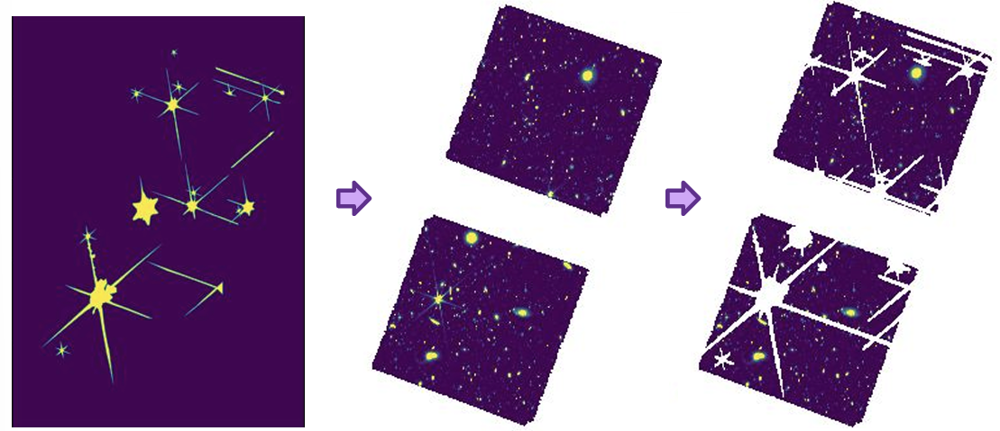
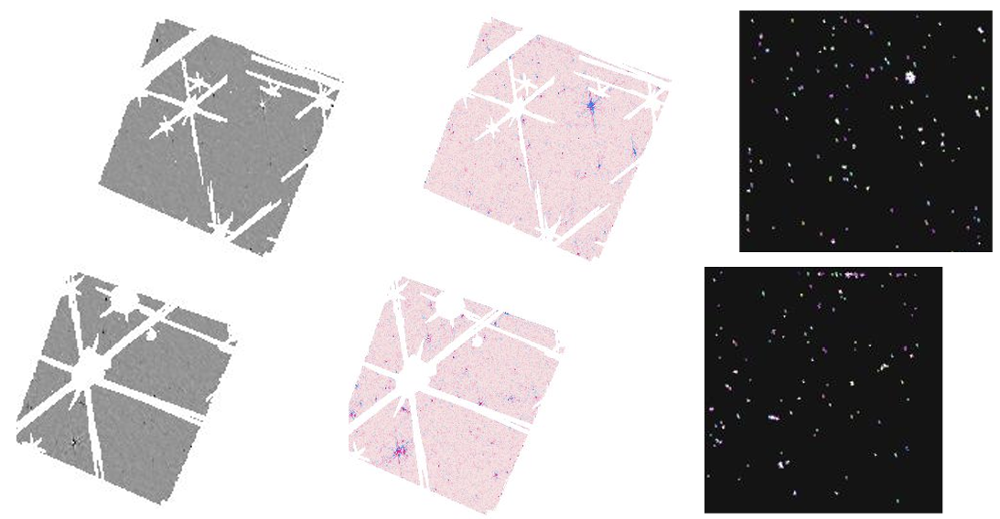

Overview
Supernovae (SNe) are explosions that occur at the end of the lifetimes of massive stars. They are indicators of stellar evolution and star forming activity within galaxies, and the connection between SNe type and a galaxy's star formation rate (SFR) is essential inunderstanding how stellar populations evolve. Within this project, we aim to identify and classify SNe within the Great Observatories Origins Deep Survey (GOODS) field using JWST's Near-Infrared Camera (NIRCam) image supplied by Next Generation Deep Extragalactic Exploratory Public Survey (NGDEEP).
Methodology
We use NIRCam images across filters f115w, f150w, f200w, f277w, f356w, and f444w to analyze the image across various wavelengths of light. We take data from two images at different epochs and subtract them from each other across filters to find objects with a variable light source known as a transient. Before subtracting the images, we mask out bright sources such as nearby stars with diffraction spikes that could appear as false positives or block other transients from being detected. We apply these hand-made star selections to the original image to ensure transients are not detected in these regions. We apply a weight and error images to each data image, creating a noise map that we use to correct for any residual background noise and for smoothing. We create a signal to noise map which gives the statistical significance of the sources with a change in brightness, using this to create a segmentation map of detected transient sources.
Results
After applying a threshold to narrow down our transient candidates, we are left with sources we label as supernovae. We currenty continue to search for supernovae within this data sample.


Discussion
The future steps of this project are to confirm the identification of SNe. We will use their photometric data across filters to create spectral energy distributions (SEDs). Our multi-band photometric SEDs at both epochs will then be modeled to broadly distinguish between different types of SNe, such as type 1a and core collapse (type2, type1b/c). Various types of SNe unveil differing star formation histories of galaxies, and we will use the classification of our detected SNe to distinguish between young, actively star forming environments and more evolved stellar populations. We plan to further this project by applying our source detection pipeline to the new JWST Advanced Deep Extragalactic Survey (JADES) data release, giving us access to images across a greater amount of epochs.